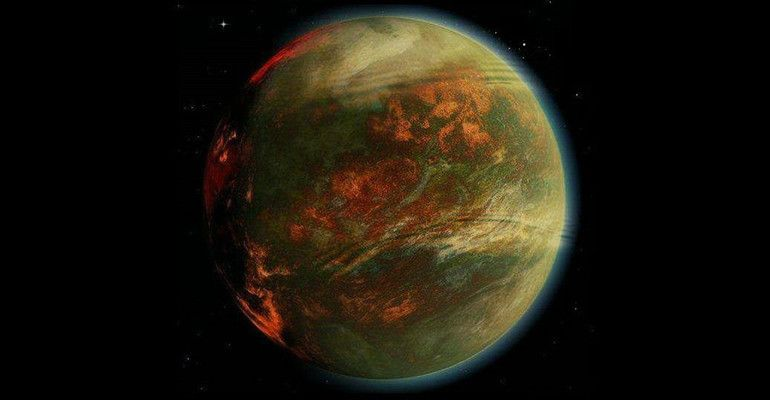
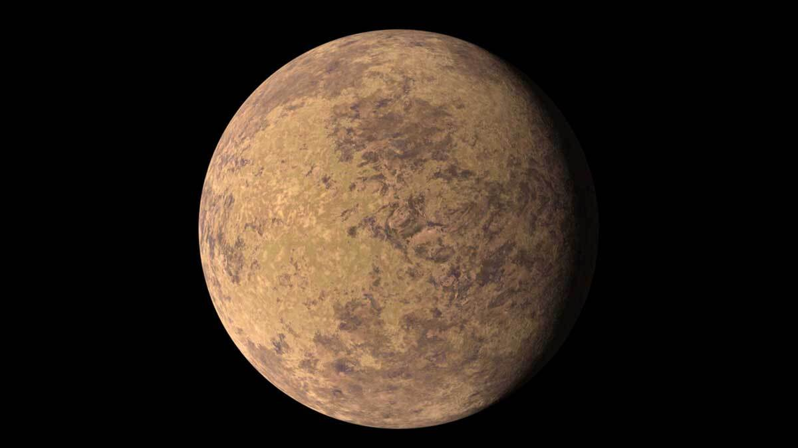

Neptunian Planets
Take a look at few examples of Neptunian Planets

GJ 436b
A warm Neptune, exhibits a comet-like tail caused by radiation from its host star stripping away its atmosphere.
Know More
Kepler-101b
A Neptune-sized planet with a thick gaseous envelope with an unusually high density.
Know More

TOI-849b
Potentially representing the core of a gas giant that lost most of its gaseous envelope.
Know More